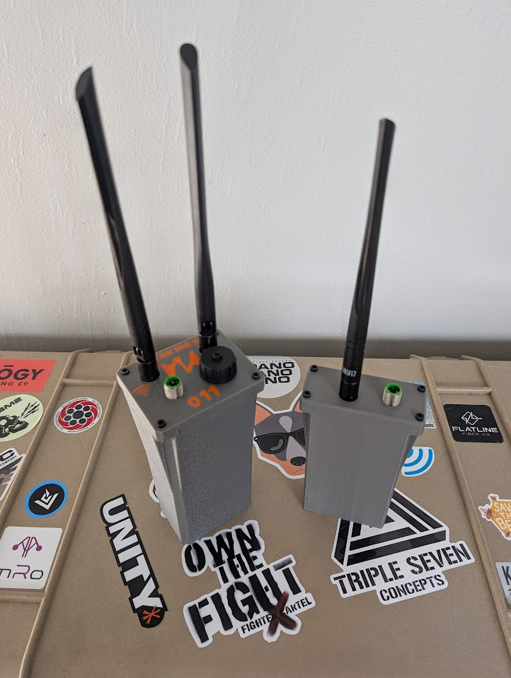

Nucleus
A portable mesh radio with two parallel networks built for ATAK. High-speed WiFi mesh for full ATAK operations — voice, video, SA, chat — with a LoRa mesh running in parallel to extend your reach miles beyond WiFi range. No plugins required.

The Nucleus

Nucleus
ATAK-ready mesh radio with WiFi mesh and LoRa CoT bridge
- ATAK Integration
- ATAK works natively over the WiFi mesh — SA, chat, pictures, routes, and data packages at full speed with no plugins
- Built-in CoT bridge transparently forwards ATAK SA and chat over Meshtastic LoRa — no plugin needed on the phone, zero configuration
- ATAK voice plugin works across the WiFi mesh — contact discovery, multi-channel support
- Video streaming via OpenTAK ICU — when OpenTAKServer is installed, its built-in MediaMTX server distributes video to all ATAK clients
- Optional OpenTAKServer runs directly on a Nucleus node — portable TAK server for field operations
- Radios & Connectivity
- 802.11s WiFi mesh — ~30 Mbps close range, 1–5 Mbps out to 1–3 miles with elevation and LoS. WPA3 encrypted.
- Built-in Meshtastic LoRa radio (RAK4631) — ~6.8 kbps (Short/Fast), tested 8+ miles with LoS
- LoRa mode switchable via web UI: CoT Bridge mode or BLE mode (Meshtastic phone app)
- Both radios use mesh topology — data hops through every connected node to extend range, auto-rerouting around failures
- WiFi Access Point (5.8 GHz) for device connectivity
- Ethernet port (RJ45) for wired connections or internet gateway
- Additional Services
- Onboard OpenDHT server — video, voice, and text via Jami with no internet or central server
- Reticulum transport for decentralized encrypted messaging (Sideband, MeshChat)
- Tailscale VPN for secure remote access when internet is available
- Internet gateway — plug any node into an internet source and share it across the mesh
ATAK Integration
Native ATAK Over WiFi
ATAK discovers other devices and shares SA automatically over the WiFi mesh via standard multicast. No TAKserver required for basic operations. Pictures, chat, routes, and data packages all transfer at full WiFi speed — the way ATAK was designed to work over an IP network.
LoRa CoT Bridge
The Nucleus runs a CoT bridge daemon that intercepts ATAK multicast traffic on the local network and transparently forwards SA and chat as CoT packets over Meshtastic LoRa. Remote positions appear natively in ATAK — no plugin required on the phone. Rate-limited and loop-protected for reliable operation.
Voice Over Mesh
The ATAK voice plugin works natively across the WiFi mesh. Voice traffic, contact discovery, and channel selection are all routed between nodes via multicast. Multi-hop voice forwarding is handled by 802.11s at Layer 2 with built-in deduplication.
Video Streaming
When OpenTAKServer is installed, its built-in MediaMTX RTSP server receives video from OpenTAK ICU (H.264 + AAC audio) and distributes it to all ATAK clients on the mesh. Stream camera feeds from the field to every connected device.
Portable OpenTAKServer
OpenTAKServer installs and runs directly on a Nucleus node. Centralized SA, data packages, mission planning, and video feeds — all on a portable, battery-powered device. No cloud, no base station, no external infrastructure.
Bridge / BLE Mode Toggle
The onboard LoRa radio switches between CoT Bridge mode (ATAK SA forwarding over LoRa) and BLE mode (standard Meshtastic phone app) via the web dashboard or REST API. Use the radio for ATAK bridging or hand it to Meshtastic — your choice.
Platform Details
Internet Gateway
Plug any node into an internet connection (Ethernet, Starlink, cellular) and the entire mesh gets internet access. Combine with Tailscale or Reticulum for secure internet-bridged communications.
Web Dashboard
Built-in web interface for monitoring mesh status, configuring node settings, toggling LoRa bridge mode, and scanning WiFi channels — accessible from any device connected to the node.
COTS Components
All off-the-shelf, user-replaceable parts with 3D-printed enclosures. No proprietary hardware — repair or modify with standard components.
Linux-Based & Extensible
Full Linux OS with a standard IP network. Add services, run scripts, or integrate with existing infrastructure using basic Linux knowledge.
Ready to Build Your Network?
Get started with Nucleus mesh nodes. Contact us for pricing and availability.